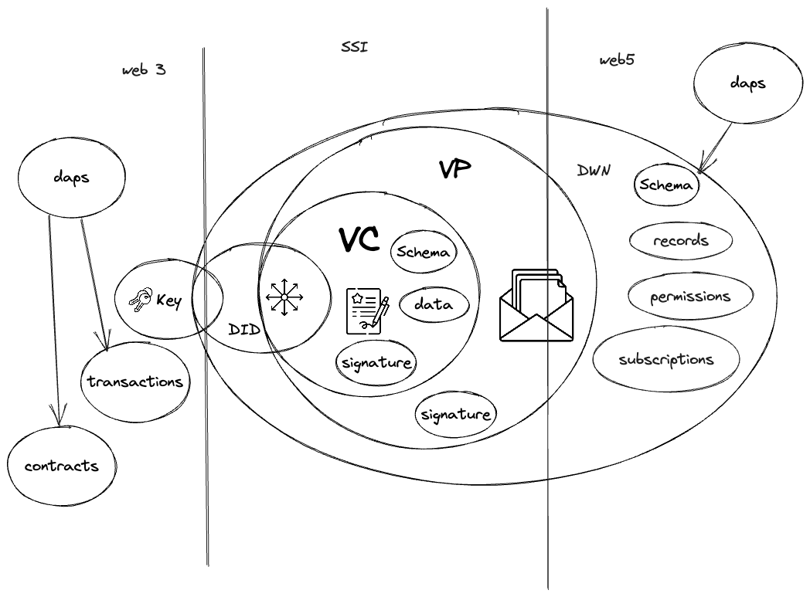

<!DOCTYPE html>
<html lang="en">
  <head>
    <meta charset="utf-8" />
    <meta name="viewport" content="width=device-width, initial-scale=1.0, maximum-scale=1.0, user-scalable=no" />

    <title></title>
    <link rel="stylesheet" href="dist/reveal.css" />
    <link rel="stylesheet" href="dist/theme/black.css" id="theme" />
    <link rel="stylesheet" href="plugin/highlight/zenburn.css" />
	<link rel="stylesheet" href="css/layout.css" />
	<link rel="stylesheet" href="plugin/customcontrols/style.css">


    <script defer src="dist/fontawesome/all.min.js"></script>

	<script type="text/javascript">
		var forgetPop = true;
		function onPopState(event) {
			if(forgetPop){
				forgetPop = false;
			} else {
				parent.postMessage(event.target.location.href, "app://obsidian.md");
			}
        }
		window.onpopstate = onPopState;
		window.onmessage = event => {
			if(event.data == "reload"){
				window.document.location.reload();
			}
			forgetPop = true;
		}

		function fitElements(){
			const itemsToFit = document.getElementsByClassName('fitText');
			for (const item in itemsToFit) {
				if (Object.hasOwnProperty.call(itemsToFit, item)) {
					var element = itemsToFit[item];
					fitElement(element,1, 1000);
					element.classList.remove('fitText');
				}
			}
		}

		function fitElement(element, start, end){

			let size = (end + start) / 2;
			element.style.fontSize = `${size}px`;

			if(Math.abs(start - end) < 1){
				while(element.scrollHeight > element.offsetHeight){
					size--;
					element.style.fontSize = `${size}px`;
				}
				return;
			}

			if(element.scrollHeight > element.offsetHeight){
				fitElement(element, start, size);
			} else {
				fitElement(element, size, end);
			}		
		}


		document.onreadystatechange = () => {
			fitElements();
			if (document.readyState === 'complete') {
				if (window.location.href.indexOf("?export") != -1){
					parent.postMessage(event.target.location.href, "app://obsidian.md");
				}
				if (window.location.href.indexOf("print-pdf") != -1){
					let stateCheck = setInterval(() => {
						clearInterval(stateCheck);
						window.print();
					}, 250);
				}
			}
	};


        </script>
  </head>
  <body>
    <div class="reveal">
      <div class="slides"><section  data-markdown><script type="text/template"><!-- .slide: class="drop" -->
<div class="" style="position: absolute; left: 0px; top: 0px; height: 700px; width: 960px; min-height: 700px; display: flex; flex-direction: column; align-items: center; justify-content: center" absolute="true">

# AI ❤️ Self Sovereign Data
</div></script></section><section  data-markdown><script type="text/template"><!-- .slide: class="drop" -->
<div class="" style="position: absolute; left: 0px; top: 0px; height: 700px; width: 960px; min-height: 700px; display: flex; flex-direction: column; align-items: center; justify-content: center" absolute="true">

### Volodia 
- Ukrainian based in Berlin 
- wrote the first line of code in 1995
- 22 years in Software 
- 10 years in identity 
- 5 years in web3 and decentralization movement 
- 4 years in sovereign data and privacy 
- building Kin as the  private and privacy-first AI 

[Youtube](https://www.youtube.com/c/volodymyrpavlyshyn) [Medium](https://medium.com/@volodymyrpavlyshyn) / [Peertube](https://diode.zone/c/vp/videos) [Yakihonne](https://yakihonne.com/users/nprofile1qqswdqt52wvwgnpw6el3z6szhj09843a0hj7kfsrjgjys6qpkzkrcwgpr3mhxue69uhkummnw3ez6vp39eukz6mfdphkumn99e3k7mgpr3mhxue69uhkummnw3ez6vpj9eukz6mfdphkumn99e3k7mgpremhxue69uhkummnw3ez6vpj9ejx7unpveskxar0wfujummjvuq3gamnwvaz7tmjv4kxz7fwv3sk6atn9e5k720mrwf)
</div></script></section><section  data-markdown><script type="text/template"><!-- .slide: class="drop" -->
<div class="" style="position: absolute; left: 0px; top: 0px; height: 700px; width: 960px; min-height: 700px; display: flex; flex-direction: column; align-items: center; justify-content: center" absolute="true">

### Values 
- individual freedom
- self-development and constant improvement 
- democratizing access to AI and Knowledge  
- property right 
- privacy right
</div></script></section><section  data-markdown><script type="text/template"><!-- .slide: class="drop" -->
<div class="" style="position: absolute; left: 0px; top: 0px; height: 700px; width: 960px; min-height: 700px; display: flex; flex-direction: column; align-items: center; justify-content: center" absolute="true">

### AI Challenges 

- Computation power 
- Electricity 
- GPU and silicon
</div></script></section><section  data-markdown><script type="text/template"><!-- .slide: class="drop" -->
<div class="" style="position: absolute; left: 0px; top: 0px; height: 700px; width: 960px; min-height: 700px; display: flex; flex-direction: column; align-items: center; justify-content: center" absolute="true">

### AI Challenges  - Data 

- Hunger 
- Ownership
- Privacy
- fair reward
</div></script></section><section  data-markdown><script type="text/template"><!-- .slide: class="drop" -->
<div class="" style="position: absolute; left: 0px; top: 0px; height: 700px; width: 960px; min-height: 700px; display: flex; flex-direction: column; align-items: center; justify-content: center" absolute="true">

### Data -  AI Fuel 

- Open data 
- Quality data 
- personal/closed data
</div></script></section><section  data-markdown><script type="text/template"><!-- .slide: class="drop" -->
<div class="" style="position: absolute; left: 0px; top: 0px; height: 700px; width: 960px; min-height: 700px; display: flex; flex-direction: column; align-items: center; justify-content: center" absolute="true">

### Data Ownership 
- web2 - Soviet union like state of data ownership 
- web3 - give ownership back 
- web5 - give privacy and selective sharing  to ownership

[learn more about webX](https://medium.com/@volodymyrpavlyshyn/toot-is-a-mastodon-tweet-500-characters-long-fcb54807e11e)
</div></script></section><section  data-markdown><script type="text/template"><!-- .slide: class="drop" -->
<div class="" style="position: absolute; left: 0px; top: 0px; height: 700px; width: 960px; min-height: 700px; display: flex; flex-direction: column; align-items: center; justify-content: center" absolute="true">

###  Self Sovereign Principles
Foundational needs 
- **Existence** — exist in real life  
- **Control** — control their identities.  
- **Access** — access to their data  
-  **Persistence** - must be long-lived.
</div></script></section><section  data-markdown><script type="text/template"><!-- .slide: class="drop" -->
<div class="" style="position: absolute; left: 0px; top: 0px; height: 700px; width: 960px; min-height: 700px; display: flex; flex-direction: column; align-items: center; justify-content: center" absolute="true">

### Self Sovereign Principles 
Open protocol and technologies
- **Transparency** -  Systems and algorithms must be transparent.  
- **Portability** - identity must be transportable  
-  **Interoperability** — Identities should be as widely usable as possible.
</div></script></section><section  data-markdown><script type="text/template"><!-- .slide: class="drop" -->
<div class="" style="position: absolute; left: 0px; top: 0px; height: 700px; width: 960px; min-height: 700px; display: flex; flex-direction: column; align-items: center; justify-content: center" absolute="true">

###  Self Sovereign Principles 
Privacy and Security 
- **Consent** -  Users must agree to the use of their identity.  
- **Minimization** -  Disclosure of claims must be minimized  
-  **Protection** — The rights of users must be protected

[Self Sovereign Identity in 7 Toots](https://medium.com/@volodymyrpavlyshyn/self-sovereign-identity-in-7-toots-c29fff0f7961)
</div></script></section><section  data-markdown><script type="text/template"><!-- .slide: class="drop" -->
<div class="" style="position: absolute; left: 0px; top: 0px; height: 700px; width: 960px; min-height: 700px; display: flex; flex-direction: column; align-items: center; justify-content: center" absolute="true">

#### WEB 5
- WEB3 + WEB2
- SSI on steroids 
- DIDs (identity) + DWNs (data)




[What web5 is about](https://medium.com/@volodymyrpavlyshyn/what-is-web5-about-and-why-does-it-matter-in-the-post-ai-and-post-blockchain-world-bca8148b0766)
</div></script></section><section  data-markdown><script type="text/template"><!-- .slide: class="drop" -->
<div class="" style="position: absolute; left: 0px; top: 0px; height: 700px; width: 960px; min-height: 700px; display: flex; flex-direction: column; align-items: center; justify-content: center" absolute="true">

###  DID
- [Dezentralized Identifier](https://identity.foundation/faq/) 
- Distribute a public key in a agnostic way
 - crypto-based verifiable identifier 
 - autonomous 

```
did:ion:EiAdGwEUhV-SPP7TKMGME1hijDUMa_EyTNfBl72tBWYISw
```
</div></script></section><section  data-markdown><script type="text/template"><!-- .slide: class="drop" -->
<div class="" style="position: absolute; left: 0px; top: 0px; height: 700px; width: 960px; min-height: 700px; display: flex; flex-direction: column; align-items: center; justify-content: center" absolute="true">

### DID Document 

```
{
  "id": "did:ion:EiAdGwEUhV-SPP7TKMGME1h",
  "@context": [
    "https://www.w3.org/ns/did/v1"
  ],
  "service": [
    {
      "id": "#dwn",
      "type": "DecentralizedWebNode",
      "serviceEndpoint": {
        "encryptionKeys": [
          "#dwn-enc"
        ],
        "nodes": [
          "https://dwn.tbddev.org/dwn2"
        ],
        "signingKeys": [
          "#dwn-sig"
        ]
      }
    }
  ],
  "verificationMethod": [
    {
      "id": "#dwn-sig",
      "controller": "did:ion:EiAdGwEUhV-SPP7TKMGME1hijDUMa_EyTNfBl72tBWYISw",
      "type": "JsonWebKey2020",
      "publicKeyJwk": {
        "crv": "Ed25519",
        "kty": "OKP",
        "x": "a3Xi1AAXRLFxnV3a7dLFngvBLetnfV680Gzae1AXSkc"
      }
    },
    {
      "id": "#dwn-enc",
      "controller": "did:ion:EiAdGwEUhV-SPP7TKMGME1hijDUMa_EyTNfBl72tBWYISw",
      "type": "JsonWebKey2020",
      "publicKeyJwk": {
        "crv": "secp256k1",
        "kty": "EC",
        "x": "NMHmwS6fjGbxDlH5zZcClzBQq2rS6XwOBtQMIZpXCag",
        "y": "Lcekf50knaHQy1azzlvbCsfO5ihNMZYTLca_yx4x85c"
      }
    }
  ],
  "authentication": [
    "#dwn-sig"
  ],
  "keyAgreement": [
    "#dwn-enc"
  ]
}
```
</div></script></section><section  data-markdown><script type="text/template"><!-- .slide: class="drop" -->
<div class="" style="position: absolute; left: 0px; top: 0px; height: 700px; width: 960px; min-height: 700px; display: flex; flex-direction: column; align-items: center; justify-content: center" absolute="true">

### Decentralized Web Nodes 

DWN = Secured storage + Permissions + message relay


</div></script></section><section  data-markdown><script type="text/template"><!-- .slide: class="drop" -->
<div class="" style="position: absolute; left: 0px; top: 0px; height: 700px; width: 960px; min-height: 700px; display: flex; flex-direction: column; align-items: center; justify-content: center" absolute="true">

## DWN 
Protocols and open technology

</div></script></section><section  data-markdown><script type="text/template"><!-- .slide: class="drop" -->
<div class="" style="position: absolute; left: 0px; top: 0px; height: 700px; width: 960px; min-height: 700px; display: flex; flex-direction: column; align-items: center; justify-content: center" absolute="true">

### AI use cases of SSI and WEB5

- learning on  private data 
- Authentic sensors — how to prove nongenerative content
-  ZKML — proof of Model use
- data economy 
- agents interaction

[Self-Sovereign Data and AI/ML](https://medium.com/@volodymyrpavlyshyn/with-the-current-boom-in-artificial-intelligence-ai-and-large-language-models-the-intersection-28cdcf5f4153)
</div></script></section><section  data-markdown><script type="text/template"><!-- .slide: class="drop" -->
<div class="" style="position: absolute; left: 0px; top: 0px; height: 700px; width: 960px; min-height: 700px; display: flex; flex-direction: column; align-items: center; justify-content: center" absolute="true">

### Personal AI use cases 
- personal ai,
- proof of personhood
- personalized experiences without risking privacy
</div></script></section><section  data-markdown><script type="text/template"><!-- .slide: class="drop" -->
<div class="" style="position: absolute; left: 0px; top: 0px; height: 700px; width: 960px; min-height: 700px; display: flex; flex-direction: column; align-items: center; justify-content: center" absolute="true">

### KIN 

- personal 
- private 
- build on top of web5
</div></script></section><section  data-markdown><script type="text/template"><!-- .slide: class="drop" -->
<div class="" style="position: absolute; left: 0px; top: 0px; height: 700px; width: 960px; min-height: 700px; display: flex; flex-direction: column; align-items: center; justify-content: center" absolute="true">

# Q & A
</div></script></section></div>
    </div>

    <script src="dist/reveal.js"></script>

    <script src="plugin/markdown/markdown.js"></script>
    <script src="plugin/highlight/highlight.js"></script>
    <script src="plugin/zoom/zoom.js"></script>
    <script src="plugin/notes/notes.js"></script>
    <script src="plugin/math/math.js"></script>
	<script src="plugin/mermaid/mermaid.js"></script>
	<script src="plugin/chart/chart.min.js"></script>
	<script src="plugin/chart/plugin.js"></script>
	<script src="plugin/customcontrols/plugin.js"></script>

    <script>
      function extend() {
        var target = {};
        for (var i = 0; i < arguments.length; i++) {
          var source = arguments[i];
          for (var key in source) {
            if (source.hasOwnProperty(key)) {
              target[key] = source[key];
            }
          }
        }
        return target;
      }

	  function isLight(color) {
		let hex = color.replace('#', '');

		// convert #fff => #ffffff
		if(hex.length == 3){
			hex = `${hex[0]}${hex[0]}${hex[1]}${hex[1]}${hex[2]}${hex[2]}`;
		}

		const c_r = parseInt(hex.substr(0, 2), 16);
		const c_g = parseInt(hex.substr(2, 2), 16);
		const c_b = parseInt(hex.substr(4, 2), 16);
		const brightness = ((c_r * 299) + (c_g * 587) + (c_b * 114)) / 1000;
		return brightness > 155;
	}

	var bgColor = getComputedStyle(document.documentElement).getPropertyValue('--r-background-color').trim();
	var isLight = isLight(bgColor);

	if(isLight){
		document.body.classList.add('has-light-background');
	} else {
		document.body.classList.add('has-dark-background');
	}

      // default options to init reveal.js
      var defaultOptions = {
        controls: true,
        progress: true,
        history: true,
        center: true,
        transition: 'default', // none/fade/slide/convex/concave/zoom
        plugins: [
          RevealMarkdown,
          RevealHighlight,
          RevealZoom,
          RevealNotes,
          RevealMath.MathJax3,
		  RevealMermaid,
		  RevealChart,
		  RevealCustomControls,
        ],


    	allottedTime: 120 * 1000,

		mathjax3: {
			mathjax: 'plugin/math/mathjax/tex-mml-chtml.js',
		},
		markdown: {
		  gfm: true,
		  mangle: true,
		  pedantic: false,
		  smartLists: false,
		  smartypants: false,
		},

		mermaid: {
			theme: isLight ? 'default' : 'dark',
		},

		customcontrols: {
			controls: [
			]
		},
      };

      // options from URL query string
      var queryOptions = Reveal().getQueryHash() || {};

      var options = extend(defaultOptions, {"width":960,"height":700,"margin":0.04,"controls":true,"progress":true,"slideNumber":false,"transition":"slide","transitionSpeed":"default"}, queryOptions);
    </script>

    <script>
      Reveal.initialize(options);
    </script>
  </body>

  <!-- created with Advanced Slides -->
</html>
